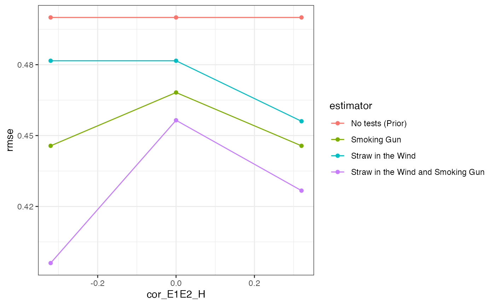

Scholars sometimes employ explicitly Bayesian procedures to evaluate “cause of effects” claims using qualitative data: how probable is the hypothesis that \(X\) did in fact cause \(Y\)? Fairfield and Charman (2017), for example, estimate the probability that the right-wing changed position on tax reform during the 2005 Chilean presidential election (\(Y\)) because of anti-inequality campaigns (\(X\)) by examining whether the case study narrative bears evidence that you would only expect to see if this were true.1
In this design, a researcher evaluates a specific hypothesis, \(H\), according to which \(Y\) only happened because \(X\) happened. They look for “clues” or evidence, \(E\), in a case narrative or other qualitative data, which would be more or less surprising to see depending on whether \(H\) is true. In our example we’ll imagine they choose one country in which there was a civil war (\(Y\)) and natural resources (\(X\)), and look for evidence (\(E\)) that helps update beliefs about \(Pr(H)\)—the probability that the civil war happened because natural resources were present.
Model:
Logically, there are four possible causal relationships between \(X\) and \(Y\):
Natural resources could cause civil war when present, resulting in the absence of civil war when natural resources are absent (\(X\) causes \(Y\)).
The presence of natural resources could be the only thing preventing war, so that their absence causes civil war (\(\neg X\) causes \(Y\)).
Civil war might happen irrespective of whether natural resources are present (\(Y\) irrespective of \(X\)).
Civil war might not happen irrespective of whether natural resources are present (\(\neg Y\) irrespective of \(X\))
Our model of the world specifies the probability that a given country has natural resources as well as the (independent) proportion of countries that have one of the causal pathways 1-4.
Inquiry:
We want to figure out if, in the case we chose, the civil war happened because of the natural resources (\(H\)) or would have happened regardless of natural resources (\(\neg H\)).
Data strategy:
We pick one case in which \(X\) and \(Y\) are both true (a country with natural resources where a civil war happened).
Answer strategy:
We’ll evaluate the likelihood of our causal hypothesis, \(H\), by looking for evidence, \(E\), that would be more or less surprising to see if \(X\) truly did cause \(Y\). Specifically, we’ll use Bayes’ rule to figure out \(Pr(H \mid E)\): the posterior probability that \(X\) caused \(Y\) in the case we chose, given the evidence we found. We make a function that calculates \(Pr(H \mid E) = \frac{Pr(H) Pr(E|H)}{Pr(H)Pr(E\mid(H)) + Pr(\neg H)Pr(E\mid\neg H)}\).
To use Bayes’ rule in conjunction with our evidence, we need to specify a few things. First, a prior \(Pr(H)\) that the hypothesis is true. Second and third, we need to state the probabilities with which we would observe a piece of evidence if our hypothesis is true (\(Pr(E|H)\)) or false (\(Pr(E|\neg H)\)).
Let’s say, for example, that \(E_1\) is the national army taking control over natural resources during a civil war. That’s very likely to happen if the natural resources caused the war. We might say \(Pr(E_1 \mid H) = .8\). But even if the natural resources didn’t cause the war, the national army might still take over natural resources for other reasons, say \(Pr(E_1 \mid \neg H) = .2\). This type of clue is often called a “straw-in-the-wind” (SIW): you expect to see it if \(H\) is true, but it’s not completely surprising to see it if \(H\) is false.
We might look for a second clue: just prior to the civil war, was an armed group created whose main name, aims, and ideology were centered around the capture and control natural resources, and were they also one of the main antagonists? Observing such a clue is really unlikely overall, even if \(H\) is true. But it’s very informative if it is observed, since it’s so unlikely to happen if \(H\) is not true: that would make the second clue a “smoking gun” (SMG). Let’s say \(Pr(E_2 \mid H) = .3, Pr(E_2 \mid \neg H) = 0\).
We’ll compare approaches in which a researcher doesn’t look for any evidence, only looks for a SIW, and only looks for a SMG. In practice, researchers seldom pre-commit to updating from a single piece of evidence, but search for multiple clues and updating about their cause of effects hypotheses jointly. Doing so in fact requires that we specify the joint distribution of the clues. There is often good reason to think clues could be correlated, conditional on the hypothesis being true or false: for example, the fact that an armed group formed in order to take resources (\(E_2\)) might convince the government to take over the natural resource (\(E_1\)), or dissuade them!
N <- 100
prob_X <- 0.5
process_proportions <- c(0.25, 0.25, 0.25, 0.25)
prior_H <- 0.5
p_E1_H <- 0.8
p_E1_not_H <- 0.2
p_E2_H <- 0.3
p_E2_not_H <- 0
cor_E1E2_H <- 0
cor_E1E2_not_H <- 0
label_E1 <- "Straw in the Wind"
label_E2 <- "Smoking Gun"
population <- declare_population(N = N, causal_process = sample(x = c("X_causes_Y",
"Y_regardless", "X_causes_not_Y", "not_Y_regardless"),
size = N, replace = TRUE, prob = process_proportions),
X = rbinom(N, 1, prob_X) == 1, Y = (X & causal_process ==
"X_causes_Y") | (!X & causal_process == "X_causes_not_Y") |
(causal_process == "Y_regardless"))
select_case <- declare_sampling(strata = paste(X, Y), strata_n = c(X0Y0 = 0,
X0Y1 = 0, X1Y0 = 0, X1Y1 = 1))
estimand <- declare_estimand(did_X_cause_Y = causal_process ==
"X_causes_Y")
joint_prob <- function(p1, p2, rho) {
r <- rho * (p1 * p2 * (1 - p1) * (1 - p2))^0.5
c(p00 = (1 - p1) * (1 - p2) + r, p01 = p2 * (1 - p1) -
r, p10 = p1 * (1 - p2) - r, p11 = p1 * p2 + r)
}
joint_prob_H <- joint_prob(p_E1_H, p_E2_H, cor_E1E2_H)
joint_prob_not_H <- joint_prob(p_E1_not_H, p_E2_not_H, cor_E1E2_not_H)
trace_processes <- declare_step(test_results = sample(c("00",
"01", "10", "11"), 1, prob = ifelse(rep(causal_process ==
"X_causes_Y", 4), joint_prob_H, joint_prob_not_H)), E1 = test_results ==
"10" | test_results == "11", E2 = test_results == "01" |
test_results == "11", handler = fabricate)
bayes_rule <- function(p_H, p_E_H, p_E_not_H) {
p_E_H * p_H/(p_E_H * p_H + p_E_not_H * (1 - p_H))
}
prior_only <- function(data) {
return(with(data, data.frame(posterior_H = bayes_rule(p_H = prior_H,
p_E_H = 1, p_E_not_H = 1), result = TRUE)))
}
E1_only <- function(data) {
return(with(data, data.frame(posterior_H = bayes_rule(p_H = prior_H,
p_E_H = ifelse(E1, p_E1_H, 1 - p_E1_H), p_E_not_H = ifelse(E1,
p_E1_not_H, 1 - p_E1_not_H)), result = E1)))
}
E2_only <- function(data) {
return(with(data, data.frame(posterior_H = bayes_rule(p_H = prior_H,
p_E_H = ifelse(E2, p_E2_H, 1 - p_E2_H), p_E_not_H = ifelse(E2,
p_E2_not_H, 1 - p_E2_not_H)), result = E2)))
}
E1_and_E2 <- function(data) {
return(with(data, data.frame(posterior_H = bayes_rule(p_H = prior_H,
p_E_H = joint_prob_H[c("00", "01", "10", "11") %in%
test_results], p_E_not_H = joint_prob_not_H[c("00",
"01", "10", "11") %in% test_results]), result = test_results)))
}
prior_only_estimator <- declare_estimator(handler = label_estimator(prior_only),
label = "No tests (Prior)", estimand = estimand)
E1_only_estimator <- declare_estimator(handler = label_estimator(E1_only),
label = label_E1, estimand = estimand)
E2_only_estimator <- declare_estimator(handler = label_estimator(E2_only),
label = label_E2, estimand = estimand)
E1_and_E2_estimator <- declare_estimator(handler = label_estimator(E1_and_E2),
label = paste(label_E1, "and", label_E2), estimand = estimand)
process_tracing_design <- population + select_case + trace_processes +
estimand + prior_only_estimator + E1_only_estimator +
E2_only_estimator + E1_and_E2_estimatorWe’ll look at how the four approaches (no tests, SIW only, SMG only, SIW + SMG) perform in terms of RMSE across different levels of correlation in clues when \(H\) is true.
designs <- expand_design(designer = process_tracing_designer,cor_E1E2_H = c(-.32, 0, .32))
diagnose_designs(designs) %>%
get_diagnosands() %>%
ggplot(aes(cor_E1E2_H, rmse, color = estimator_label, group = estimator_label)) +
geom_point() + geom_line() + theme_bw() 
As expected, using more data gets you better answers on average: the RMSE is highest with no process-tracing, lowest when both clues are used, and middling when only one clue is used.
Against conventional wisdom,2 however, the straw-in-the-wind outperforms the smoking gun. That’s somewhat surprising, since the smoking gun is perfectly informative when observed, whereas observing the straw-in-the-wind leaves open the possibility that the hypothesis is false. While the researcher is still making mistakes with the straw-in-the-wind, they’re observing it more frequently, and so have more opportunities to update in the right direction. By contrast, the smoking gun is rare: many times it is not observed, and so the researcher downweights the posterior probability of \(H\). Compared to the gun, the straw is less wrong more often.
Notice that the gains from a joint approach are much greater when the clues are negatively correlated than when they are positively correlated. This feature arises because the pieces of evidence carry less independent information when they are positively correlated. To see this, suppose they were perfectly correlated, so that seeing one guaranteed the other would also be present. In this case, there is no additional information gleaned from the observation of one clue once the other has been observed: they are effectively equivalent tests.
Collier, David. 2011. “Understanding Process Tracing.” PS: Political Science & Politics 44 (4): 823–30.
Fairfield, Tasha, and Andrew E. Charman. 2017. “Explicit Bayesian Analysis for Process Tracing: Guidelines, Opportunities, and Caveats.” Political Analysis 25 (3): 363–80.
For example: “the former President [said] that the tax subsidy ‘never would have been eliminated if I had not taken [the opposition candidate] at his word’ when the latter publicly professed concern over inequality.” (Fairfield and Charman (2017))↩︎
E.g. Collier (2011): of the four process-tracing tests, straws-in-the-wind are ``the weakest and place the least demand on the researcher’s knowledge and assumptions.’’ (826)↩︎